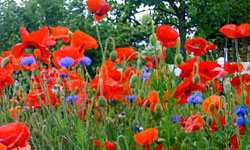
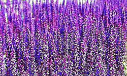
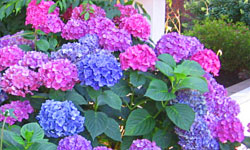
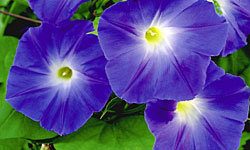
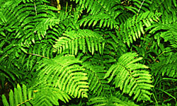

Groepen
- 
Eén- en tweejarigen
Een- en tweejarigen kunt u zelf zaaien. Deze planten bloeien vaak meer en langer dan vaste planten en brengen kleur en variatie. Daarnaast kunnen zij goed leemtes vullen in de border. Een- en tweejarigen zijn te krijgen in vele verschillende vormen, van hele kleine tere plantjes tot klimmers die in onafzienbare tijd uw muur of schutting bedekken met een kleurige bloemenpracht. Bekijk onze selectie Een- en tweejarigen
- 
Vaste planten
en kruiden De groep vaste planten omvat kruidachtige planten die geen houtige takken vormen. Een groot deel van deze planten sterven in de winter bovengronds af, maar schieten elk jaar terug vanuit een overblijvend wortelstelsel. Een klein deel van de vaste planten zijn groenblijvend en zijn in de winter ook decoratief (een aantal zijn zelfs winterbloeiers). Vaste planten worden in pot gekweekt en kunnen dus het ganse jaar aangeplant worden. Ze staan in serre 5 en 6 alfabetisch gerangschikt.kies een vaste plant
- 
Bomen en
struiken Van oudsher is dit onze specialiteit. Bij ons vindt u dan ook een uitgelezen selectie van inheemse bomen en struiken ideaal voor alle 'echt' groen beplantingen.zoek tussen bomen en struiken
- 
Klim- en
gevelplanten Een tuin kan niet zonder verticale accenten. Klimplanten zijn daarvoor de ideale versierders, ter verfraaiing van een muur, prieel of pergola of om een lelijk hekwerk aan het oog te onttrekken. Elke klimplant heeft wel iets aantrekkelijks, een rijke bloei, een mooi blad, opvallende bessen. Kortom in de meeste tuinen is er wel een plaatsje dat door een gepaste klimplant verfraaid kan worden. Bovendien zijn ze ook zeer geschikt voor kleine tuinen en zelfs voor geveltuintjes omdat ze zo weinig ruimte innemen in de grond. beklim onze lijst
-
Water- en
vijverplanten Waterplanten noemen we vaak vijverplanten, ze zijn een absolute noodzaak om tot een biologisch evenwicht te komen! Waterplanten zijn dus planten die groeien in of onder het water. Tot deze categorie behoren drijfplanten, onderwaterplanten, moerasplanten en waterlelies. Zuurstofplanten zijn meestal ook onderwaterplanten (er zijn uitzonderingen). Andere buitenbeentjes zijn de (natte) oeverplanten... zij groeien niet graag in of onder het water maar houden vooral van een natte, vochtige bodem en planten we daarom meestal rondom de vijver aan. trek uw laarzen aan voor onze keuze waterplanten
- 
Schaduwplanten
Iedereen heeft één of meer schaduwplekken in zijn tuin. Ook daar voorzien we groen, of het nu een varen is of Kweetniadiewa superba, zelf een mostapijtje moet kunnen.